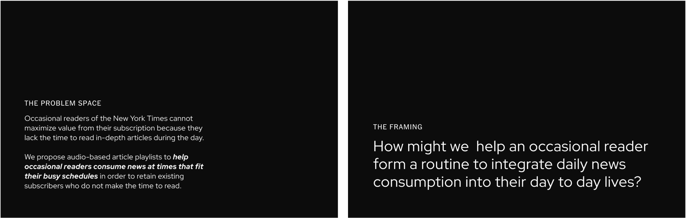
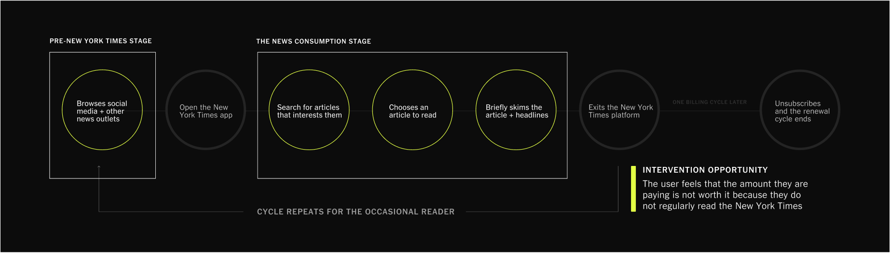
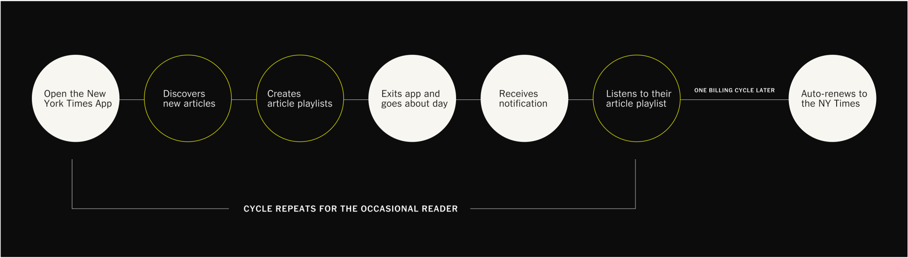

NEW YORK TIMES PLAYLIST
EXPERIENCE DESIGN
NEW YORK TIMES PLAYLIST
EXPERIENCE DESIGN
ROLE
DURATION
TEAM
UI Designer, Art Direction, Visual Designer
November 2022 - December 2022
Joanna Lee, Jonathan Choi, Soraya Elchehimi, Dennis Limbo
PROJECT OVERVIEW
This is a 6-week project for a senior design course, the premise of this project was to identify an opportunity that can be solved through a design intervention for an existing company of our choosing. The intervention needed to be backed by design decisions, evidence and a clear rationale that encompassed both user and business value.
THE INTERVENTION
The New York Times Playlists allows for occasional readers of the Times to consume in-depth articles through an audio-based intervention. This design solution allows for New York Times content and articles to fit into a reader’s daily routine and schedule, in order to retain subscribers who do not make the time to read and allow for easier news consumption.
THE NEW YORK TIMES
The New York Times had a business goal of hitting at least 15 million digital subscribers by 2027. In the recent years, they have successful and continue to remain focused on maintaining this growth. However, the increase in subscribers was mainly driven by their heavily discounted promotional offerings.
Through further secondary research and surveys provided evidence that the New York Times was the most canceled digital news subscription. One of the main reasons for cancellation was due to readers' perceived lack of time for reading, therefore occasional readers did not find value in renewing their subscriptions for the regular rate.
NIEMAN LAB SURVEY
The Nieman Lab Survey received over 500 respondents, and the NY Times accounted for nearly a quarter of all the cancellations. Survey results further showed that the reason subscribers were cancelling their New York Times subscription was due to consumption overload, as they did not make the time to read the news.
“I just don’t have time to sit and read a newspaper anymore without a long commute on public transportation”
SURVEY RESPONDENT
Nieman Lab Survey, “Cancel Culture: Why do People Cancel News Subscriptions?”
“As of now, the media company continues to grow its subscriber base of digital-only subscribers, but this growth is largely a result of discounted offers.”
FORBES, 2022
FRAMING THE PROBLEM SPACE
Through secondary research, insights and user interviews with digital news subscribers, the team was able to develop the scope and focus of our project:
CURRENT JOURNEY OF THE OCCASIONAL READER
THE SOLUTION: NEW YORK TIMES PLAYLISTS
UPDATED JOURNEY OF THE OCCASIONAL READER
YOUR PACE, YOUR MEDIUM
Article playlists allow readers’ to integrate news content throughout their day– without having to allocate specific times to read. Listen or read with progress tracking to follow along with articles, allowing readers to pause, and pick up where they left off when needed.
KEY CONSIDERATION
“If I have time and I am multi-tasking, I'll listen to it instead of reading the whole [article]."
SPRINT INTERIEWEE
Wall Street Journal Subscriber
NOTIFY THE MOMENTS
Readers with busy schedules can identify moments in their day to send themselves push notifications in order to stay up to date with the news.
KEY CONSIDERATION
5 out of 7 interviewees stated that their morning routine involved planning the day with a calendar
SPRINT INTERIEWEES
JUST "FOR YOU"
70% of Americans only read and skim headlines when they first engage with news content
KEY CONSIDERATION
70% of Americans only read and skim headlines when they first engage with news content
RESEARCH CENTRE
Columbia University + The French National Institute